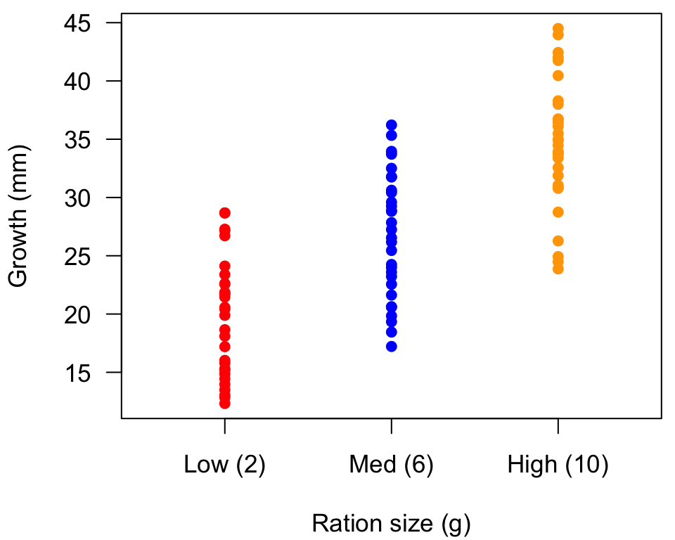
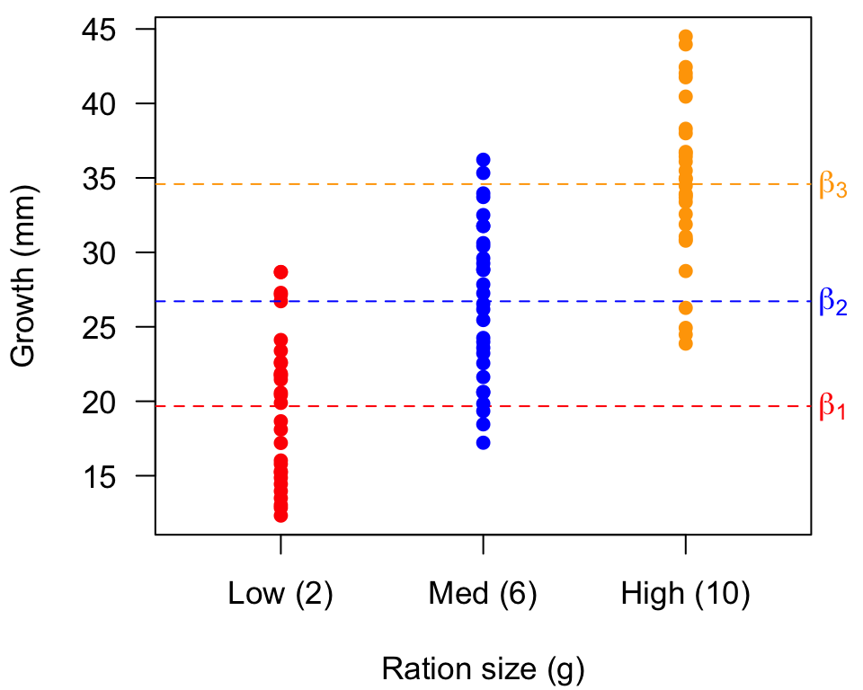
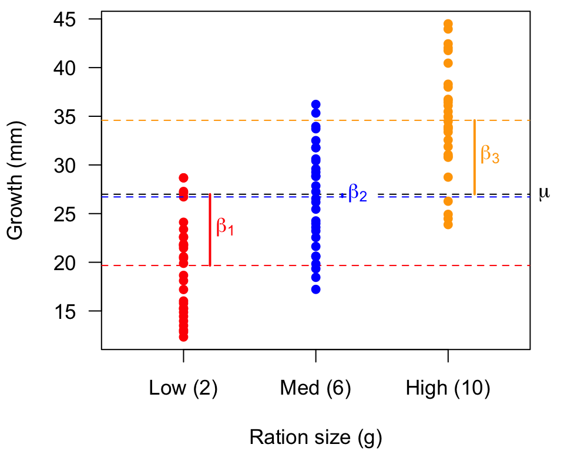
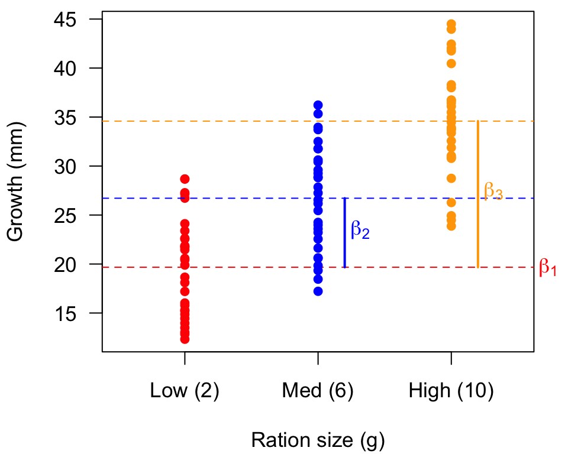
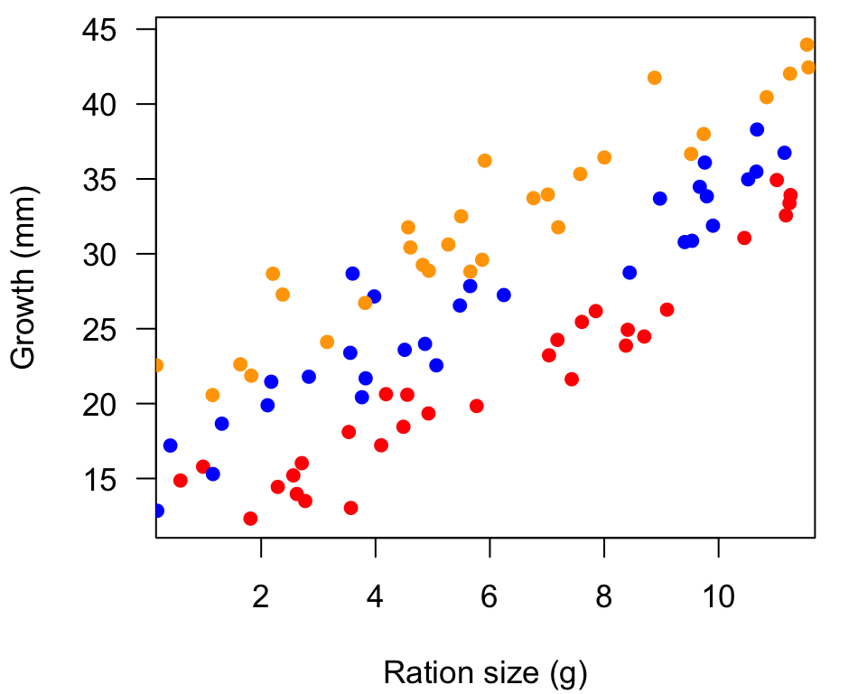
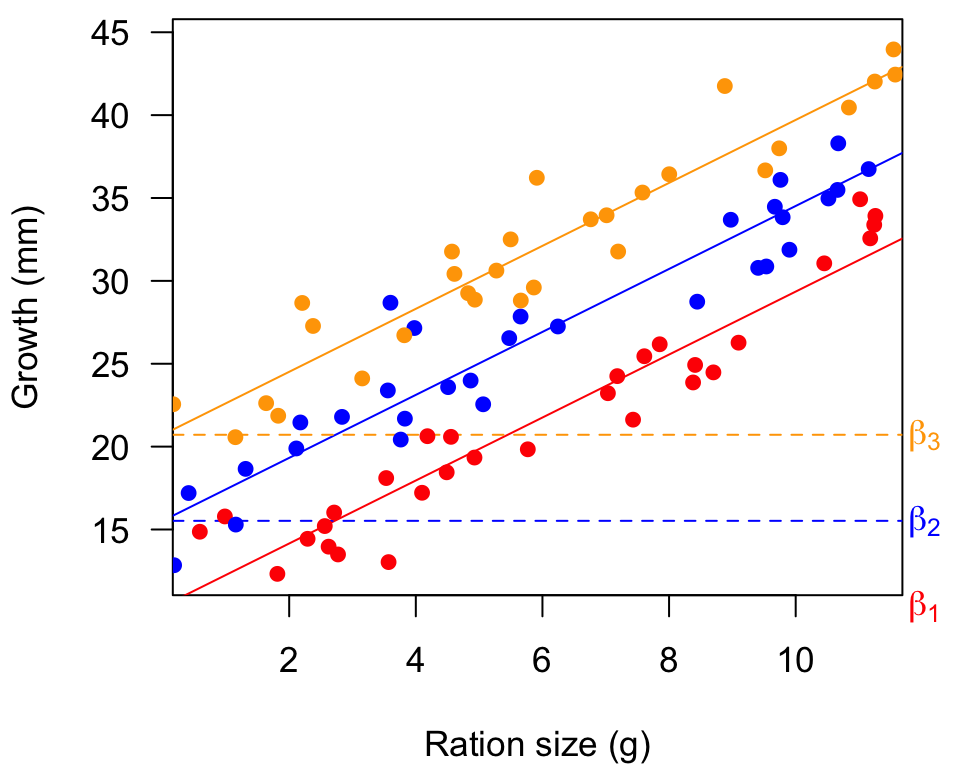

# List of packages required:
packages <- c("tidyverse", "janitor")
# Load packages into session
lapply(packages, require, character.only = TRUE)
rm(packages)
# Ensure functions with duplicate names are from the correct package
select <- dplyr::select
map <- purrr::map
summarize <- dplyr::summarize
clean_names <- janitor::clean_names
mytheme <- theme_light()+ #define custom theme for ggplots
theme(axis.title.y = element_text(margin = margin(t = 0, r = 10, l = 0)),
axis.title.x = element_text(margin = margin(t = 10, l = 0)),
text=element_text(size=15))Design Matrices
Intro
Recall matrix form for linear models: \[\mathbf{y}=\mathbf{X\beta+e}, \quad \mathbf{e} \sim \text{MVN}(\mathbf{0, \Sigma})\]
\[\begin{equation*} \begin{bmatrix} y_1 \\ y_2 \\ \vdots \\ y_n \end{bmatrix} = \begin{bmatrix} 1 & x_{1,1} & \ldots & x_{n,1} \\ 1 & x_{1,2} & \ldots & x_{n,2} \\ \vdots & \vdots & \ddots & \vdots \\ 1 & x_{1,n} & \ldots & x_{n,n} \\ \end{bmatrix} \begin{bmatrix} \beta_1 \\ \beta_2 \\ \vdots \\ \beta_n \end{bmatrix} + \begin{bmatrix} e_1 \\ e_2 \\ \vdots \\ e_n \end{bmatrix} \end{equation*}\]
The columns in \(\mathbf{X}\) define the design of the analysis.
Recall that we can use \(\mathbf{X}\) to solve for \(\hat{\mathbf{y}}\): \[ \begin{align} \hat{\mathbf{y}} &= \mathbf{X}\hat{\boldsymbol{\beta}}\\ &= \mathbf{X}((\mathbf{X}^{\top} \mathbf{X})^{-1} \mathbf{X}^{\top} \mathbf{y}) \\ &= (\mathbf{X}(\mathbf{X}^{\top} \mathbf{X})^{-1} \mathbf{X}^{\top}) \mathbf{y} \\ &= \mathbf{Hy} \end{align} \]
https://en.wikipedia.org/wiki/Projection_matrix#Intuition
| Model | Description |
|---|---|
| \(\text{growth}_i = \beta_0 + \beta_{1,\text{species}} + \epsilon_i\) | 1-way ANOVA |
| \(\text{growth}_i = \beta_0 + \beta_{1,\text{species}} + \beta_{2,\text{tank}} + \epsilon_i\) | 2-way ANOVA |
| \(\text{growth}_i = \beta_0 + \beta_1 \text{ration}_i + \epsilon_i\) | simple linear regression |
| \(\text{growth}_i = \beta_0 + \beta_1 \text{ration}_i + \beta_2 \text{temperature}_i + \epsilon_i ~ ~\) | multiple regression |
| \(\text{growth}_i = \beta_0 + \beta_{1,\text{species}} + \beta_2 \text{ration}_i + \epsilon_i\) | ANCOVA |
https://en.wikipedia.org/wiki/Design_matrix
Defining models with \(\mathbf{X}\)
Mean only
What would \(\mathbf{X}\) look like for a simple model of the data \(\mathbf{y}\) that included a mean only?
\[\mathbf{y} = \boldsymbol{\mu} + \mathbf{e}\]
We can rewrite our model as \[\begin{align*} \mathbf{y} &= \boldsymbol{\beta}_0 + \mathbf{e} \\ &= \begin{bmatrix} \beta_0 \\ \beta_0 \\ \vdots \\ \beta_0 \end{bmatrix} + \mathbf{e} \\ &= \begin{bmatrix} 1 \\ 1 \\ \vdots \\ 1 \end{bmatrix} \beta_0 + \mathbf{e} \\ &= \mathbf{X} \boldsymbol{\beta} + \mathbf{e} \end{align*}\]
with \(\mathbf{X} = [1 ~ 1 \cdots 1]^{\top}\) and \(\boldsymbol{\beta} = [\beta_0]\)
2 predictors
What would \(\mathbf{X}\) look like for a regression model with 2 predictors?
\[\begin{align*} y_i &= \beta_0 + \beta_1 x_{1,i} + \beta_2 x_{2,i} + e_i \\ &\Downarrow ? \\ \mathbf{y} &= \mathbf{X} \boldsymbol{\beta} + \mathbf{e} \end{align*}\]
\[\begin{align*} \mathbf{y} &= \begin{bmatrix} 1 & x_{1,1} & x_{2,1} \\ 1 & x_{1,2} & x_{2,2} \\ \vdots & \vdots& \vdots \\ 1 & x_{n,1} & x_{n,2} \\ \end{bmatrix} \begin{bmatrix} \beta_0 \\ \beta_1 \\ \beta_2 \end{bmatrix} + \mathbf{e} \\ &= \mathbf{X} \boldsymbol{\beta} + \mathbf{e} \end{align*}\]
What would \(\mathbf{X}\) look like for model with an intercept and linear increase over time \(t\)?
\[\begin{align*} y_t &= \beta_0 + \beta_1 t + e_t \\ &\Downarrow \\ \mathbf{y} &= \mathbf{X} \boldsymbol{\beta} + \mathbf{e} \\ &\Downarrow \\ \begin{bmatrix} y_1 \\ y_2 \\ \vdots \\ y_n \end{bmatrix} &= \begin{bmatrix} 1 & ? \\ 1 & ? \\ \vdots & \vdots \\ 1 & ? \end{bmatrix} \begin{bmatrix} \beta_0 \\ \beta_1 \end{bmatrix} + \begin{bmatrix} e_1 \\ e_2 \\ \vdots \\ e_n \end{bmatrix} \end{align*}\]
Simulate data
set.seed(123) #Set seed for pseudo-random number generator, for reproducibility
## sample size
nn <- 30
## groups
pp <- 3
## global intercept
alpha <- 5
## offsets
beta_1 <- c(1,2,3)*5
## slope
beta_2 <- 2
## vector of linear parameters
BETA <- matrix(c(alpha, beta_1, beta_2), ncol = 1)
## global mean
x_avg <- rep(1, nn*pp)
## offsets
grps <- factor(rep(seq(3), ea = nn))
x_int <- model.matrix(~ grps + 0)
## slope
x_cov <- c(runif(nn, 0, 4), runif(nn, 4, 8), runif(nn, 8, 12))
x_cov <- sample(x_cov, nn*pp)
## groups for anova
i1 <- x_cov <= 4
i2 <- x_cov > 4 & x_cov <= 8
i3 <- x_cov > 8
ration <- cbind(i1, i2, i3) * 1
colnames(ration) <- c("_1", "_2", "_3")
## matrix of predictors
xx <- cbind(x_avg, x_int, x_cov)
## Gaussian errors
ee <- rnorm(nn*pp, 0, 2)
## simulated data
yy <- xx %*% BETA + ee
## plot all data
par(mai = c(0.9,0.9,0.1,0.1),
cex = 1.1)
## low
plot(rep(1, nn), yy[i1], pch = 16, col = "red", las = 1,
xlim = c(0.5,3.5), ylim = range(yy),
xaxt = "n",
xlab = "Ration size (g)", ylab = "Growth (mm)")
## med
points(rep(2, nn), yy[i2], pch = 16, col = "blue")
## high
points(rep(3, nn), yy[i3], pch = 16, col = "orange")
axis(1, at = seq(3), labels = c("Low (2)", "Med (6)", "High (10)"))
ANOVA
Analysis of variance (ANOVA) is used to analyze differences among group means
Imagine we are analyzing fish growth as a function of ration and we want to know if the mean growth of fish varies among 3 ration sizes.
\[ \bar{g}_{\text{ration}_1} \overset{?}{=} \bar{g}_{\text{ration}_2} \overset{?}{=} \bar{g}_{\text{ration}_3} \]
Our model for an observation \(y_i\) is something like
\[ y_i = \mu_i + e_i \\ ~ \\ \mu_i = \left\{ \begin{matrix} \mu_1 ~ \text{if fed ration 1} \\ \mu_2 ~ \text{if fed ration 2} \\ \mu_3 ~ \text{if fed ration 3} \end{matrix} \right. \]
We can use binary 0/1 coding to represent if/then constructs
\[\begin{align*} y_i &= \mu_1 x_{1,i} + \mu_2 x_{2,i} + \mu_3 x_{3,i} + e_i \\ ~ \\ x_{1,i} &= 1 ~ \text{if fed ration 1 and 0 otherwise} \\ x_{2,i} &= 1 ~ \text{if fed ration 2 and 0 otherwise} \\ x_{3,i} &= 1 ~ \text{if fed ration 3 and 0 otherwise} \end{align*}\]
\[\begin{align*} y_i = \beta_1 x_{1,i} + \beta_2 x_{2,i} + \beta_3 x_{3,i} + e_i \\ \Downarrow \\ \mathbf{y} = \mathbf{X} \boldsymbol{\beta} + \mathbf{e} \end{align*}\]
\[ \mathbf{X} = \begin{bmatrix} x_{1,1} & x_{2,1} & x_{3,1} \\ x_{1,2} & x_{2,2} & x_{3,2} \\ \vdots & \vdots & \vdots \\ x_{1,n} & x_{2,n} & x_{3,n} \end{bmatrix} \]
One-way ANOVA: means model (w/ 3 groups and 7 observations)
The given data set has the first three observations belonging to the first group, the following two observations belonging to the second group and the final two observations belonging to the third group. If the model to be fit is just the mean of each group, then the model is
\[ y_{ij}=\mu_{i}+\varepsilon_{ij} \] which can be written
\[ {\begin{bmatrix}y_{1}\\y_{2}\\y_{3}\\y_{4}\\y_{5}\\y_{6}\\y_{7}\end{bmatrix}}={\begin{bmatrix}1&0&0\\1&0&0\\1&0&0\\0&1&0\\0&1&0\\0&0&1\\0&0&1\end{bmatrix}}{\begin{bmatrix}\mu _{1}\\\mu _{2}\\\mu _{3}\end{bmatrix}}+{\begin{bmatrix}\varepsilon _{1}\\\varepsilon _{2}\\\varepsilon _{3}\\\varepsilon _{4}\\\varepsilon _{5}\\\varepsilon _{6}\\\varepsilon _{7}\end{bmatrix}}\] In this model \(\mu_{i}\) represents the mean of the \(i\)th group.
Code
## fit ANOVA w/ `- 1` to remove intercept
m1 <- lm(yy ~ ration - 1)
coef(m1)ration_1 ration_2 ration_3
19.67013 26.71379 34.58413 
One-way ANOVA: offset from global mean
Suppose we wanted to reframe our model to instead include the effect of ration relative to the overall mean growth rate \((\mu)\)
If we write the model as \[y_i = \mu + \beta_1 x_{1,i} + \beta_2 x_{2,i} + \beta_3 x_{3,i} + e_i\] and calculate the groups means as
\[ \bar{y}_{j=1} = \mu + \beta_1 \\ \bar{y}_{j=2} = \mu + \beta_2 \\ \bar{y}_{j=3} = \mu + \beta_3, \] We would then define \(\mathbf{X}\) and \(\boldsymbol{\beta}\) as
\[ \mathbf{X} = \begin{bmatrix} 1 & 1 & 0 & 0 \\ \vdots & \vdots & \vdots & \vdots \\ 1 & 1 & 0 & 0 \\ 1 & 0 & 1 & 0 \\ \vdots & \vdots & \vdots & \vdots \\ 1 & 0 & 1 & 0 \\ 1 & 0 & 0 & 1 \\ \vdots & \vdots & \vdots & \vdots \\ 1 & 0 & 0 & 1 \end{bmatrix} ~~~ \boldsymbol{\beta} = \begin{bmatrix} \mu \\ \beta_1 \\ \beta_2 \\ \beta_3 \end{bmatrix} \]
However, this produces an error because \(\mathbf{X}\) is not full rank \((\mathbf{X}_{(\cdot 1)} = \mathbf{X}_{(\cdot 2)} + \mathbf{X}_{(\cdot 3)} + \mathbf{X}_{(\cdot 4)})\)
## design matrix
X <- cbind(rep(1,nn*pp), ration)
## fit ANOVA w/ `- 1` to remove intercept
m2 <- lm(yy ~ X - 1)
coef(m2) X X_1 X_2 X_3
34.584128 -14.913996 -7.870338 NA ## solve for beta by hand
beta <- solve(t(X) %*% X) %*% t(X) %*% yy## Error in solve.default(t(X) %*% X) :
## system is computationally singular: reciprocal condition numberTry considering the overall mean of \(\mathbf{y}\) in terms of the group means: \[\bar{y} = \frac{\bar{y}_{j=1} + \bar{y}_{j=2} + \bar{y}_{j=3}}{3}\] \[\mu = \frac{(\mu + \beta_1) + (\mu + \beta_2) + (\mu + \beta_3)}{3}\] \[\beta_1 + \beta_2 + \beta_3 = 0\] Now we can rewrite our model as \[y_i = \mu + \beta_1 x_{1,i} + \beta_2 x_{2,i} + (\text{-} \beta_1 + \text{-} \beta_2) x_{3,i} + e_i\] and calculate the group means as
\[ \begin{aligned} \bar{y}_{j=1} &= \mu + \beta_1 \\ \bar{y}_{j=2} &= \mu + \beta_2 \\ \bar{y}_{j=3} &= \mu - (\beta_1 + \beta_2) \end{aligned} \] We would then define \(\mathbf{X}\) and \(\boldsymbol{\beta}\) as
\[ \mathbf{X} = \begin{bmatrix} 1 & 1 & 0 \\ \vdots & \vdots & \vdots \\ 1 & 1 & 0 \\ 1 & 0 & 1 \\ \vdots & \vdots & \vdots \\ 1 & 0 & 1 \\ 1 & -1 & -1 \\ \vdots & \vdots & \vdots \\ 1 & -1 & -1 \end{bmatrix} ~~~ \boldsymbol{\beta} = \begin{bmatrix} \mu \\ \beta_1 \\ \beta_2 \end{bmatrix} \]
We could also fit our grand mean model after some simple algebra \[\begin{align*} y_i &= \mu + \beta_1 x_{1,i} + \beta_2 x_{2,i} + \beta_3 x_{3,i} + e_i \\ &\Downarrow \\ y_i - \mu &= \beta_1 x_{1,i} + \beta_2 x_{2,i} + \beta_3 x_{3,i} + e_i \\ &\Downarrow \\ y_i - \bar{y} &= \beta_1 x_{1,i} + \beta_2 x_{2,i} + \beta_3 x_{3,i} + e_i \end{align*}\]
Code
## empty design matrix
XX <- matrix(NA, nn*pp, pp)
XX[i1,] <- matrix(c(1, 1, 0), nn, pp, byrow = TRUE)
XX[i2,] <- matrix(c(1, 0, 1), nn, pp, byrow = TRUE)
XX[i3,] <- matrix(c(1, -1, -1), nn, pp, byrow = TRUE)
## fit model & get parameters
Bvec <- coef(lm(yy ~ XX - 1))
names(Bvec) <- c("mu", "beta_1", "beta_2")
Bvec
## mu beta_1 beta_2
## 26.9893503 -7.3192180 -0.2755598
## mean of ration 1
unname(Bvec["mu"] + Bvec["beta_1"])
## [1] 19.67013
## mean of ration 2
unname(Bvec["mu"] + Bvec["beta_2"])
## [1] 26.71379
## mean of ration 3
unname(Bvec["mu"] - (Bvec["beta_1"] + Bvec["beta_2"]))
## [1] 34.58413## fit anova with implicit grand mean
m2 <- lm((yy - mean(yy)) ~ ration - 1)
coef(m2)
## ration_1 ration_2 ration_3
## -7.3192180 -0.2755598 7.5947778
coef(m2) + mean(yy)
## ration_1 ration_2 ration_3
## 19.67013 26.71379 34.58413
coef(m1)
## ration_1 ration_2 ration_3
## 19.67013 26.71379 34.58413
One-way ANOVA: offset from reference group
What if we wanted to treat one group as a control or reference (eg, our low ration) and estimate the other effects relative to it?
\[ y_i = \beta_1 x_{1,i} + (\beta_1 + \beta_2) x_{2,i} + (\beta_1 + \beta_3) x_{3,i} + e_i \]
such that
\[ \begin{align} \bar{y}_{j=1} &= \beta_1 \\ \bar{y}_{j=2} &= \beta_1 + \beta_2 \\ \bar{y}_{j=3} &= \beta_1 + \beta_3 \end{align} \]
We would define \(\mathbf{X}\) and \(\boldsymbol{\beta}\) as
\[ \mathbf{X} = \begin{bmatrix} 1 & 0 & 0 \\ \vdots & \vdots & \vdots \\ 1 & 0 & 0 \\ 1 & 1 & 0 \\ \vdots & \vdots & \vdots \\ 1 & 1 & 0 \\ 1 & 0 & 1 \\ \vdots & \vdots & \vdots \\ 1 & 0 & 1 \end{bmatrix} ~~~ \boldsymbol{\beta} = \begin{bmatrix} \beta_1 \\ \beta_2 \\ \beta_3 \end{bmatrix} \]
Code
## empty design matrix
XX <- matrix(NA, nn*pp, pp)
## for beta_1
XX[i1,] <- matrix(c(1, 0, 0), nn, pp, byrow = TRUE)
## for beta_1 + beta_2
XX[i2,] <- matrix(c(1, 1, 0), nn, pp, byrow = TRUE)
## for beta_1 + beta_3
XX[i3,] <- matrix(c(1, 0, 1), nn, pp, byrow = TRUE)
## fit anova with implicit grand mean
Bvec <- coef(lm(yy ~ XX - 1))
names(Bvec) <- c("beta_1", "beta_2", "beta_3")
Bvec beta_1 beta_2 beta_3
19.670132 7.043658 14.913996 ## mean of ration 1
unname(Bvec["beta_1"])
## mean of ration 2
unname(Bvec["beta_1"] + Bvec["beta_2"])
## mean of ration 3
unname(Bvec["beta_1"] + Bvec["beta_3"])[1] 19.67013
[1] 26.71379
[1] 34.58413
ANCOVA
Analysis of covariance (ANCOVA) is used for categorical and continuous predictors. Here is our model with the categorical effect of lineage & the continuous effect of ration
\[ \text{growth}_i = \alpha + \beta_{1,\text{lineage}} + \beta_2 \text{ration}_i + \epsilon_i \]
Dropping the global intercept & writing out the lineage effects yields
\[ \text{growth}_i = \underbrace{\beta_1 x_{1,i} + \beta_2 x_{2,i} + \beta_3 x_{3,i}}_{\text{lineage}} + \underbrace{\beta_4 x_{4,i}}_{\text{ration}} + e_i \]
We would then define \(\mathbf{X}\) and \(\boldsymbol{\beta}\) as
\[ \mathbf{X} = \begin{bmatrix} 1 & 0 & 0 & r_1 \\ \vdots & \vdots & \vdots & \vdots \\ 1 & 0 & 0 & r_{j_1} \\ 0 & 1 & 0 & r_{j_1+1} \\ \vdots & \vdots & \vdots & \vdots \\ 0 & 1 & 0 & r_{j_2+j_2} \\ 0 & 0 & 1 & r_{j_1+j_2+1} \\ \vdots & \vdots & \vdots & \vdots \\ 0 & 0 & 1 & r_n \end{bmatrix} ~~~ \boldsymbol{\beta} = \begin{bmatrix} \beta_1 \\ \beta_2 \\ \beta_3 \\ \beta_4 \end{bmatrix} \]
Code

## create design matrix
XX <- cbind(L1 = rep(c(1,0,0), ea = nn), # effect of lineage 1
L2 = rep(c(0,1,0), ea = nn), # effect of lineage 2
L3 = rep(c(0,0,1), ea = nn), # effect of lineage 3
RA = x_cov) # effect of ration
## fit model
Bvec <- coef(lm(yy ~ XX - 1))
names(Bvec) <- c("beta_1", "beta_2", "beta_3", "beta_4")
Bvec beta_1 beta_2 beta_3 beta_4
10.35668 15.52218 20.71430 1.89973 
Design matrices with model.matrix()
We have been building our design matrices by hand, but we could instead use model.matrix() with factor().
factor(x) tells R to treat x as categorical
## 2 groups with 2 obs each
groups <- factor(c(1, 1, 2, 2))
## inspect them
groups[1] 1 1 2 2
Levels: 1 2model.matrix(~ x) uses a right-hand side formula ~ x
## create design matrix from `groups`
model.matrix(~ groups) (Intercept) groups2
1 1 0
2 1 0
3 1 1
4 1 1
attr(,"assign")
[1] 0 1
attr(,"contrasts")
attr(,"contrasts")$groups
[1] "contr.treatment"What if we don’t use factor()?
## 2 groups with 2 obs each
groups <- c(1, 1, 2, 2)
## create design matrix from `groups`
model.matrix(~ groups) (Intercept) groups
1 1 1
2 1 1
3 1 2
4 1 2
attr(,"assign")
[1] 0 1You can drop the intercept term with - 1
## 2 groups with 2 obs each
groups <- factor(c(1, 1, 2, 2))
## create design matrix from `groups`
model.matrix(~ groups - 1) groups1 groups2
1 1 0
2 1 0
3 0 1
4 0 1
attr(,"assign")
[1] 1 1
attr(,"contrasts")
attr(,"contrasts")$groups
[1] "contr.treatment"The names/categories are irrelevant for factor(). R assigns factors in alphabetical order; the reference is first.
## 2 groups with 2 obs each
groups <- factor(c("ref", "ref", "exp", "exp"))
## create design matrix from `groups`
model.matrix(~ groups) (Intercept) groupsref
1 1 1
2 1 1
3 1 0
4 1 0
attr(,"assign")
[1] 0 1
attr(,"contrasts")
attr(,"contrasts")$groups
[1] "contr.treatment"We can change the reference case with relevel()
## 2 groups with 2 obs each
groups <- relevel(groups, "ref")
## create design matrix from `groups`
model.matrix(~ groups) (Intercept) groupsexp
1 1 0
2 1 0
3 1 1
4 1 1
attr(,"assign")
[1] 0 1
attr(,"contrasts")
attr(,"contrasts")$groups
[1] "contr.treatment"We can add multiple factors with +
diet <- factor(c(1, 1, 2, 2))
sex <- factor(c("f", "m", "f", "m"))
model.matrix(~ diet + sex) (Intercept) diet2 sexm
1 1 0 0
2 1 0 1
3 1 1 0
4 1 1 1
attr(,"assign")
[1] 0 1 2
attr(,"contrasts")
attr(,"contrasts")$diet
[1] "contr.treatment"
attr(,"contrasts")$sex
[1] "contr.treatment"You can also extract the design matrix from a fitted model:
## ANCOVA model from above
mod_fit <- lm(yy ~ XX - 1)
## get design matrix
mm <- model.matrix(mod_fit)
head(mm) XXL1 XXL2 XXL3 XXRA
1 1 0 0 7.431311
2 1 0 0 7.181870
3 1 0 0 3.532070
4 1 0 0 2.710283
5 1 0 0 11.177369
6 1 0 0 2.622823